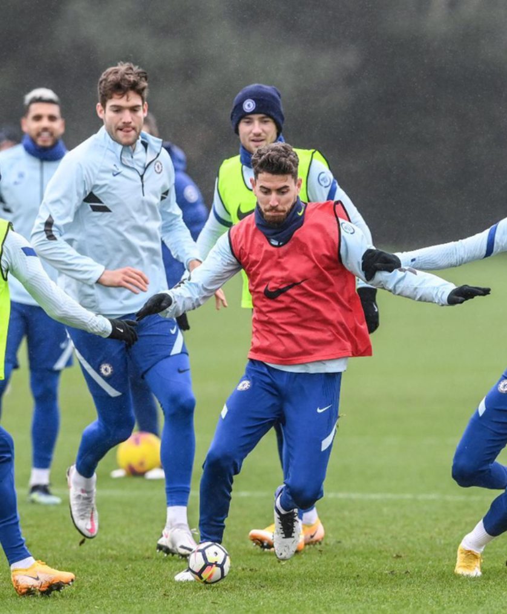
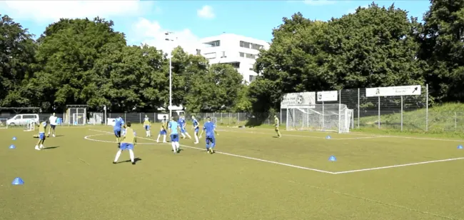
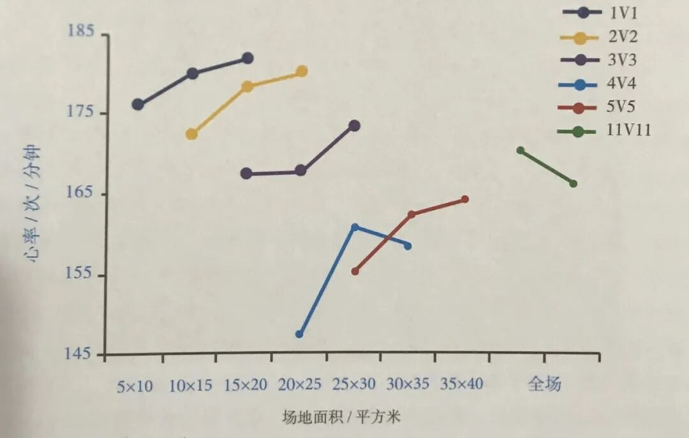
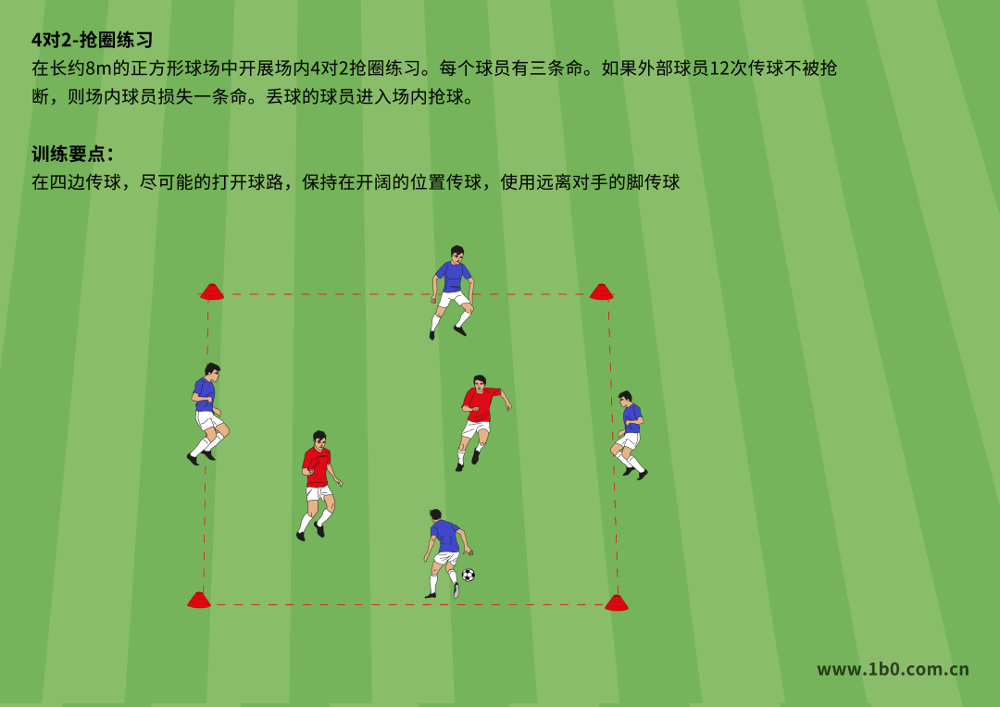
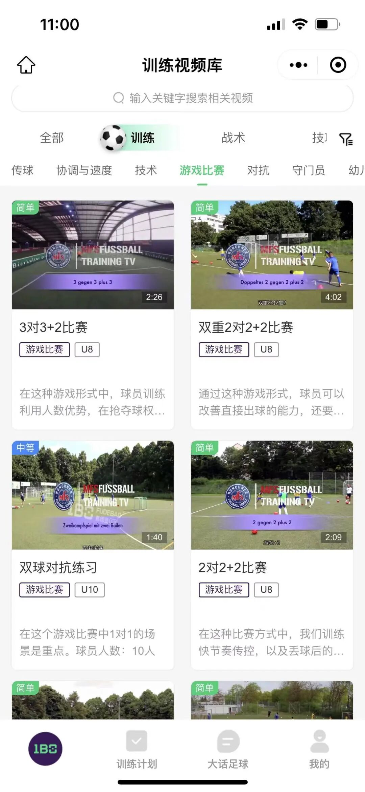
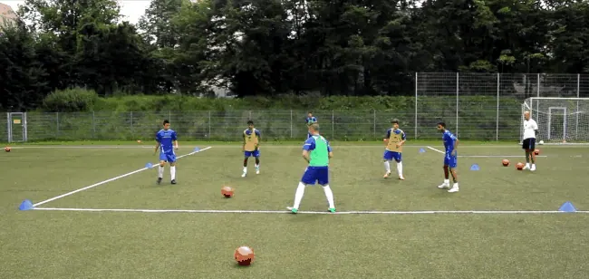

近几年，从图赫尔的迷你球，再到哈维的花式抢圈，一线教练各种花式训练方法频繁出圈。

深究下来，这些出圈的训练方法无一例外都是小场地比赛。小场地在最大限度的提高球员的体能、技术能力和战术能力方面体现出巨大潜力，这种小场地比赛越来越多的出现在我们基层青训的训练场上，今天就来和大家好好扒一扒弗德堡体育和慕尼黑足球学校对于小场地比赛的理解。
小场地比赛概述
首先明确基本概念，小场地比赛，顾名思义，与大场地相对，是在更小的场地上进行比赛。其中一些小场地比赛往往带有不同于正常比赛的规则和游戏的性质，这样的小比赛也被称为游戏比赛。

作为一种训练形式，小场地比赛有如下优点：
首先，小比赛是对技术训练的最好巩固，比如当天的训练教给孩子们某个过人技巧，当天训练可以用3对3或者5对5的小比赛作为结尾，设定一个规则，运用今天学到的过人技巧后完成的射门可以得2分，教练可以在场边提醒运用动作技巧的时机，以此让孩子琢磨技术动作的实战运用，巩固当日的训练成果。
再有，与大场地相比，小场地的训练有更快的比赛节奏，因为场地小，对手距离很近，球员控球时间有限。因此，小场地比赛对提高球员的有氧代谢能力很有效，可以达到90%最大心率的心率反应，可以有效提升球员的专项体能。

此外，由于比赛节奏快，球员需要在更快速的时间内观察形式并作出判断，因此可以有效的提升孩子的主观反应。再辅以贴合比赛场景或战术单元的游戏设计，这样的游戏比赛可以有效的提升孩子的思维决策能力与基本战术素养，即提高他们的球商。
游戏比赛的组织
这里我们着重聊一聊游戏比赛，如果说基本的传球与技术练习是足球技术基本功的训练，那么游戏比赛则可以称得上是足球战术的基本功训练。因此，教练在进行游戏比赛练习的执行时，除了讲清楚游戏规则外，一定要指导孩子，让他们学会如何观察思考决策。
举个例子，我们大家最开始接触的，最经典的游戏比赛——抢圈练习，俗称“溜猴”

游戏规则很好理解，圈外侧的球员不断相互传递保持控球，圈内侧的球员需想方设法取得球权。一定传球次数内，如果内侧球员完成断球则圈内球员获胜，反之则外侧球员获胜。
除了规则之外，更重要的是，过程中教练还应不断指导提醒孩子：
- 外侧无球队员要向有球队员靠拢，提供出球线路
- 持球队员要学会运用动作技巧打开传球线路，用远离对手的脚出球
- 持球队员要观察对手及队友位置作出传球选择
- 内侧球员要设法压迫持球队员使用非惯用脚
- ……
更多指导细节，详见小程序内视频：
这些指导虽然繁琐，但在最开始的游戏比赛中是必要的，最开始的训练中，教练必要时甚至可以打断进行讲解。但当孩子们对此有了一定的理解以后，教练则应保持训练的连贯和流畅。
当孩子们能够流畅的进行后，我们就可以在此基础上进行延伸，比如可以引入中立球员的设定，进一步提升孩子们的传控能力，比如：
原文含嵌入视频，本地未保存。
或者通过游戏设定不同的比赛场景，如下面视频中这个训练单元，针对的就是反击中向前输送球的场景:
原文含嵌入视频，本地未保存。
我们弗德堡体育和慕尼黑足球学校为大家准备了近百种不同的游戏比赛设计

具体组织方法和指导要点可以登录网站www.1b0.com.cn，在训练场->训练->游戏比赛中看到，亦可通过微信小程序直接访问
小场地比赛的训练安排
小场地比赛的宏观训练安排方面，我们有以下几点建议：
- 每堂训练课均可以以常规的小场地比赛作为结束，可以是5v5或者6v6的形式，用于巩固当天训练课上练习的技术和技巧。
- 游戏比赛可以作为常规训练单元，但由于游戏比赛快节奏高强度的特点，同一天的训练中，不要再进行其他的体能或身体训练，尤其是青春发育期之前的孩子。
- 一定要等孩子们的技术达到一定水平再开始游戏比赛的练习，孩子基本功不过关的情况下进行游戏比赛反而会起到反效果，不能连贯进行下去的游戏比赛对他们的兴趣和自信心将是毁灭性的打击。
- 还是因为高强度快节奏的特点，游戏比赛的训练应采取间歇式方式进行，即连续进行5-6分钟，进行1.5-2分钟的休息（年龄越小的孩子间隔时间需要越长），然后再持续进行。再分享一个小技巧，为保证训练的连贯和孩子们的注意力，这个休息的时间可以作为败方球员的“惩罚”时间。

原文配图 · 弗德堡体育 原文配图 · 弗德堡体育
文字与图片版权归各自权利人所有；排版根据抓取内容整理。